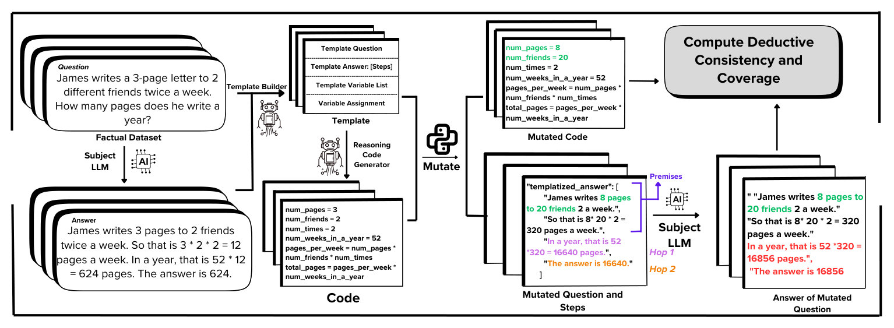

explainer · arXiv 2025
Do language models reason, or just remember? Count the hops
Frontier models ace Olympiad problems and still stumble on high-school maths they haven’t seen. DeduCE measures where that breaks: not in reading the problem, but in chaining the steps.
The problem with final answers
Benchmarks like GSM8K report one number: did the final answer match? That number can hide a lot. If a model has seen a problem (or near copies) in training, a right answer says little about whether it can deduce anything. So instead of grading the answer, DeduCE grades the reasoning.
A chain of thought is a proof
Think of an ideal deductive reasoner: given a set of premises, it can derive valid conclusions over any number of hops. DeduCE compares a language model to that ideal by treating its chain of thought as a proof and checking partial traces against a reference proof built from the original problem. Two skills are measured separately:
- Understanding premises: how well does the model cope as the input gets longer and holds more premises?
- Inferring conclusions: how well can it chain multiple reasoning hops?

Because existing benchmarks may be memorised, the pipeline evaluates models on novel, perturbed versions of benchmark problems: templatise a problem, then vary how many premises it has and how many hops its solution needs.
What they found
On novel grade-school maths problems (GSM8K), models are fairly robust to more input premises but lose accuracy as the number of reasoning hops grows: deductive consistency falls by roughly 15–30% from one hop to five. The failures are not mainly due to a shift in language style or to early errors propagating; they come from a more basic limit in chaining hops. On the original benchmark the decay is invisible, because memorisation masks it. On a synthetic dataset with more solution steps, asking the model to deduce step by step did not remove the decay.
About these figures. Figure 1 uses the example from the paper’s own Figure 1 with my extra hops added; Figure 2 is a schematic of the paper’s findings rather than its plots.
Why it matters
If you evaluate a model only on published benchmarks, you may be measuring recall. Perturbing problems, and counting hops, tells you how much reasoning is actually left when the answer can’t be looked up.
Read the paper: arXiv